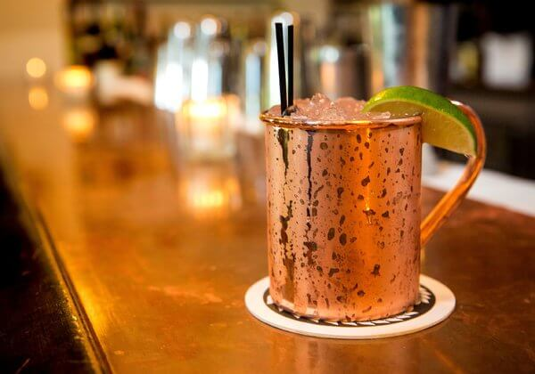
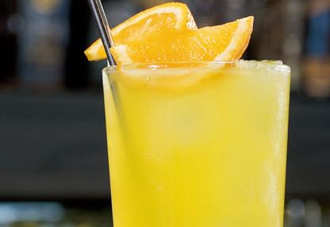
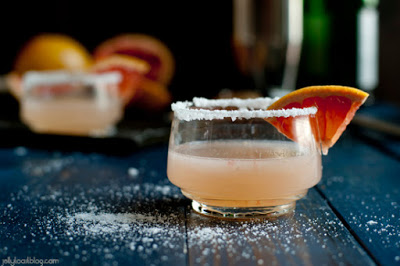
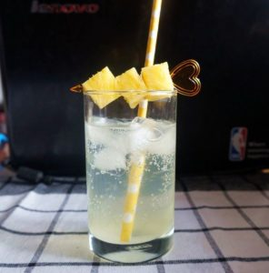
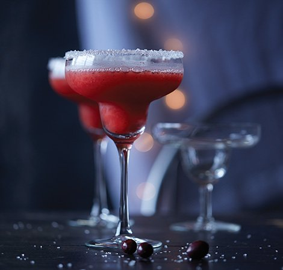
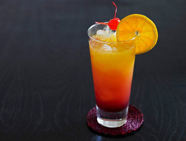

- 調酒六大基底：伏特加、琴酒、蘭姆酒、龍舌蘭、威士忌、白蘭地。
- 推薦入門基底：伏特加、琴酒、蘭姆酒、龍舌蘭
一、伏特加
推薦品牌：思美洛Smirnoff、SKYY等
調酒：莫斯科騾子（Vodka+薑汁汽水）、螺絲起子（Vodka+柳橙汁）、鹹狗（Vodka＋葡萄柚汁）
-
莫斯科騾子
- 材料：
- 伏特加2oz
- 檸檬汁（約半顆檸檬的量）
- 糖 酌量
- 薑汁啤酒或汽水
- 作法：
- 在雪克杯（可以馬克杯代替）中加入糖、伏特加、檸檬汁，加冰塊後搖勻，最後倒入薑汁汽水，放個檸檬當裝飾，再擺幾片薑片即完成。

-
螺絲起子
- 材料：
- Vodka 1又1/2oz(可照自己喜好調整)
- Orange Juice 柳橙汁 適量
- 作法：
- 先在裝滿冰塊的杯中倒入伏特加，倒入柳橙汁到八分滿 (依照喜好自己調整)即完成。

-
鹹狗
- 材料：
- 伏特加 30ml
- 葡萄柚汁 90ml
- 作法：
- 製作鹽口杯，並冰鎮，杯中放入冰塊，攪拌冰杯後將融水倒出，加入所有材料，攪拌均勻即完成。

二、琴酒
推薦品牌：高登Gordon’s和英人Beefeaters
調酒：琴蕾（琴酒+檸檬汁）、Gin Fizz（琴酒＋檸檬汁＋蘇打水）
-
琴蕾
- 材料：
- 琴酒 2.25oz
- 萊姆汁 0.75oz
- 作法：
- 將材料加冰攪拌，帶材料混合均勻且充份冰鎮後濾冰倒入冰鎮過的雞尾酒杯中，以萊姆角或萊姆片作為裝飾即完成。

-
Gin Fizz
- 材料：
- 琴酒 60 ml
- 蛋白 1 顆
- 鮮奶油 45 ml
- 新鮮檸檬汁 15 ml
- 新鮮萊姆汁 15 ml
- 糖漿 20 ml
- 橙花水 3 dashes
- 蘇打水 適量
- 作法：
- 將鮮奶油及蘇打水以外的材料加入shaker後用Hand blender打發，加入鮮奶油再用Hand blender打發一次，加入冰塊shake，在冰過的酒杯中加入約2分滿的蘇打水，把shake完的酒快速雙重過濾至酒杯到接近酒杯滿的位置(不要到滿)，等待約20秒讓泡沫硬化，可用搗棒輕敲杯底讓泡沫上浮，最後把剩下的酒液補上讓杯中的泡沫浮起，再加上自己喜歡的裝飾即完成。

四、龍舌蘭
推薦品牌：金快活、銀快活 Jose Cuervo
調酒：瑪格麗特（龍舌蘭＋橙皮酒＋檸檬汁），龍舌蘭日出（龍舌蘭＋柳橙汁＋紅石榴糖漿）
-
瑪格麗特
- 材料：
- 35ml 龍舌蘭
- 20ml 橙酒
- 15ml 萊姆汁
- 作法：
- 使用的調製手法是搖盪法，通常瑪格麗特用馬丁尼杯或飛碟杯盛裝，另外還有一大特點則是鹽口杯。鹽口杯是指讓鹽巴沾附在杯口邊緣，如此在飲用時嘴巴會先碰觸到鹽巴接著才是酒液。製作鹽口杯的方法很簡單，只要先將萊姆塗抹在杯口上，再用沾有萊姆汁的杯口接觸鹽巴，就會一層鹽沾附在杯口上囉！

-
龍舌蘭日出
- 材料：
- 龍舌蘭30ml
- 紅石榴糖漿10ml
- 柳橙汁90ml
- 作法：
- 把冰塊放入杯中加入龍舌蘭與柳橙汁，緩緩倒入紅石榴糖漿做出漸層，放上柳橙片與紅櫻桃裝飾即完成。
